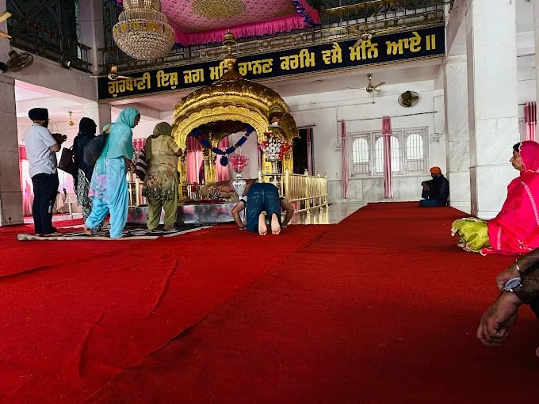
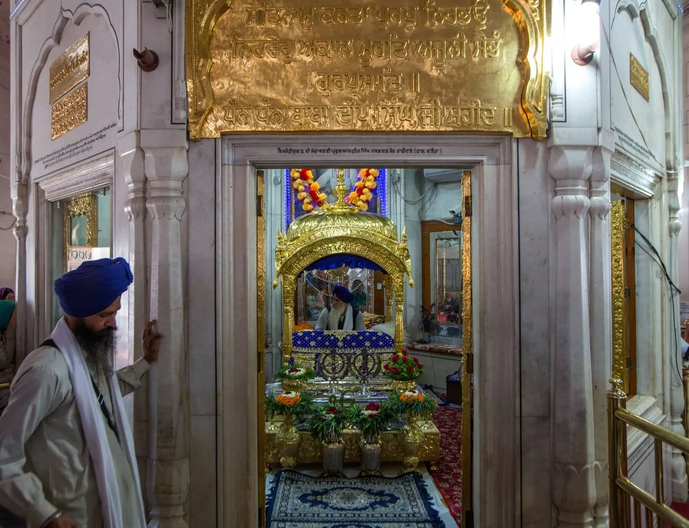
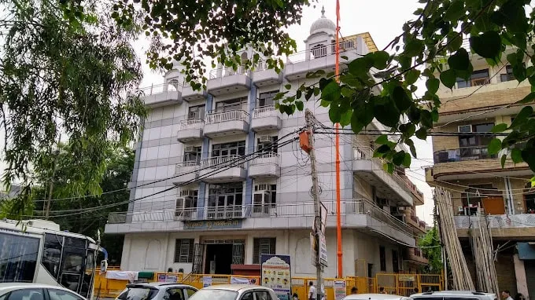
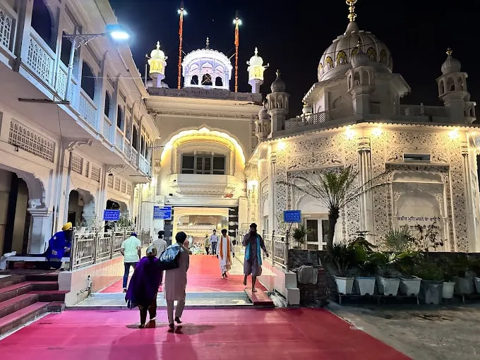
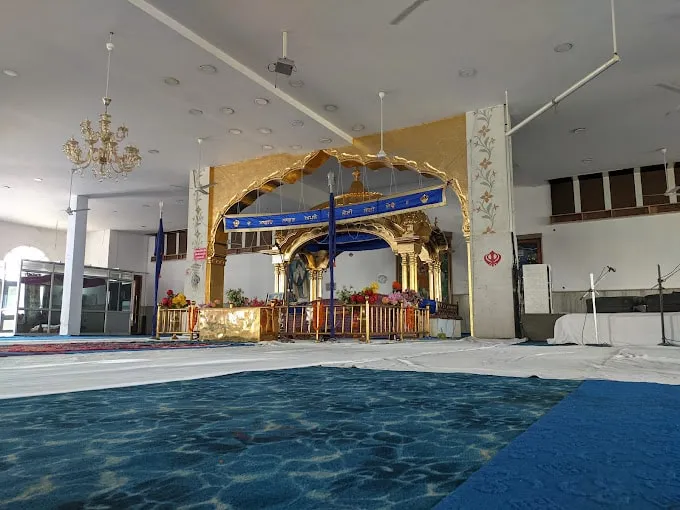
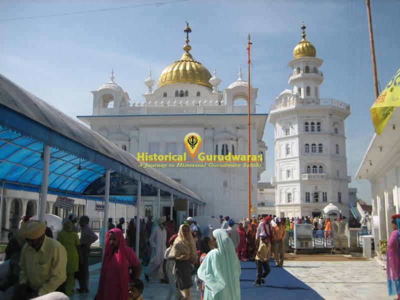
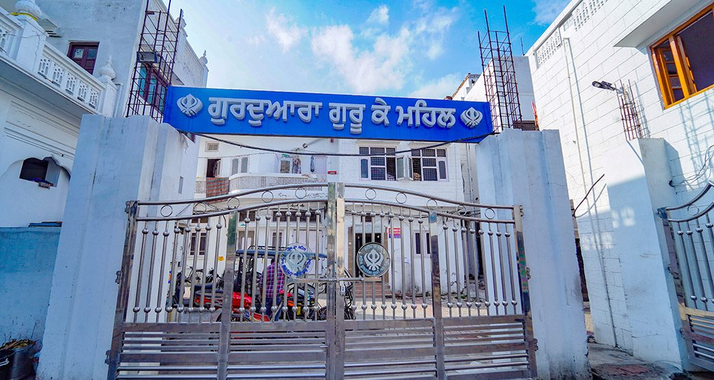
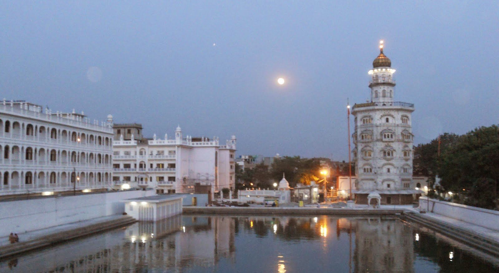

The Golden Temple in Amritsar, India (Sri Darbar Sahib Amritsar), is one of the most famous gurudwaras in Amritsar and serves not only as a central religious hub for Sikhs but also stands as a symbol of…
The great Sikh scholar and martyr Baba Deep Singh was mortally wounded here when in 1762 the Afghan invader Ahmed Shah Abdali ordered the Harmandar Sahib blown up and the Sacred Tank filled in.

Gurudwara Shri Ramsar Sahib is located in the Chattiwind Gate area of Amritsar.

This Gurdwara commemorates Baba Bota Singh and Baba Garja Singh, who bravely confronted Mughal forces on July 27, 1739, near Sarai Nurdin, approximately 6 km from Taran Taran City.
This Gurdwara commemorates Baba Bota Singh and Baba Garja Singh, who bravely confronted Mughal forces on July 27, 1739, near Sarai Nurdin, approximately 6 km from Taran Taran City.
Gurdwara Guru Ki Kothri is located in the village of Chola, 5 km from Sirhali Kalan and 24 km from Taran Taran City, in Taran Taran District, Punjab.
Gurudwara Gurusar Satlani, located 1.5 km south of the railway station named after it, lies within the revenue limits of Hoshiarnagar village in Amritsar district, Punjab.
Gurudwara Shri Pipli Sahib is located in the Putli Ghar area of Amritsar, remembering Shri Guru Ram Das Ji, Shri Guru Arjun Dev Ji, and Shri Guru Hargobind Ji.

Gurudwara Shri Janam Asthaan Shri Guru Amardas Ji is in Basarke Village in the Amritsar District and is a famous Gurudwara in Amritsar.

Gurudwara Shri Janam Asthaan Baba Budha Ji Sahib is located in Village Kathunangal, District Amritsar, situated on the Amritsar Batala road, marking the birthplace of Baba Budha Ji Sahib.

Gurudwara Shri Patshahi 6 Dhand is located in Dhand Village, Amritsar District, on the Amritsar – Gurudwara Beed Baba Budha Ji road.
Gurudwara Shri Atari Sahib is located in Sultanvind village, Amritsar District, and a famous Gurudwara in Amritsar.
This Gurudwara commemorates Mata Kaulan Ji, a devout Muslim woman and the daughter of the Qazi of Lahore.

In 1664, Guru Har Krishan Ji declared “Baba Bakale” before passing, indicating his successor resided in Bakala

Built in 1573 CE by Guru Ram Das Ji, the fourth Sikh Guru and founder of Amritsar (then Ramdaspur), this site was originally his residence

Renowned as a spiritually gifted child, Baba Atal earned the title "Baba" for his wisdom despite dying at just nine years old